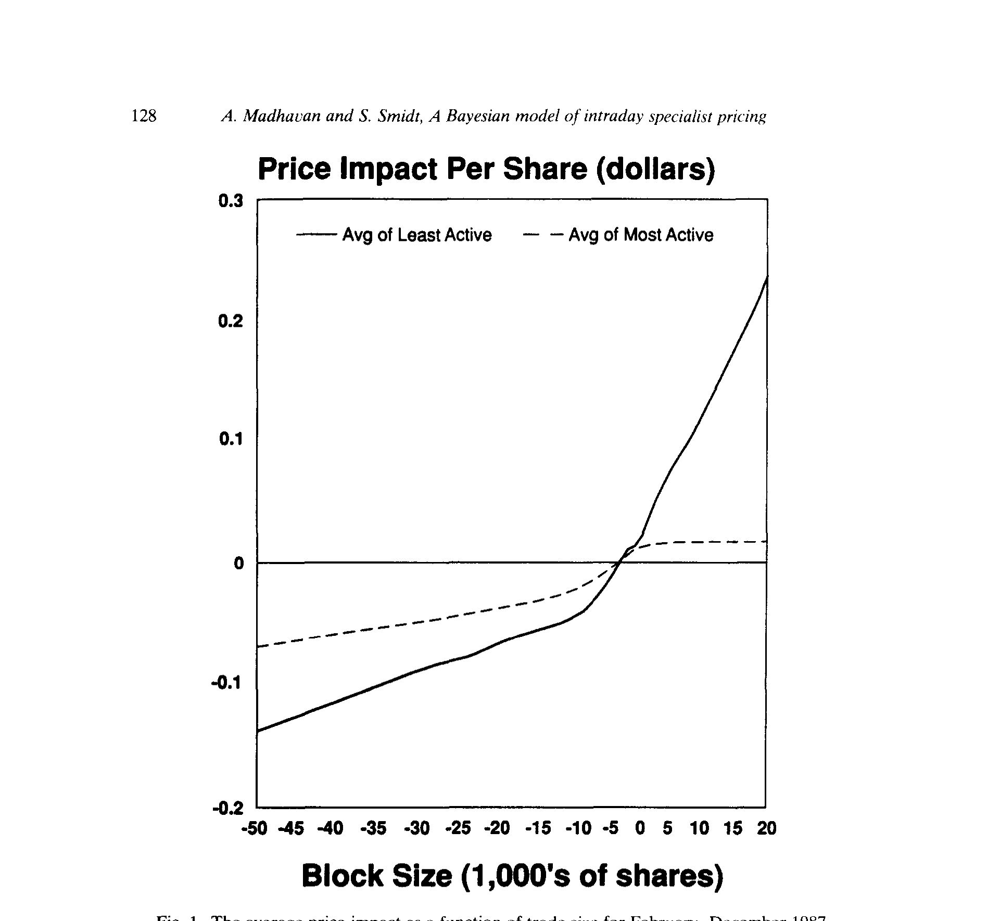
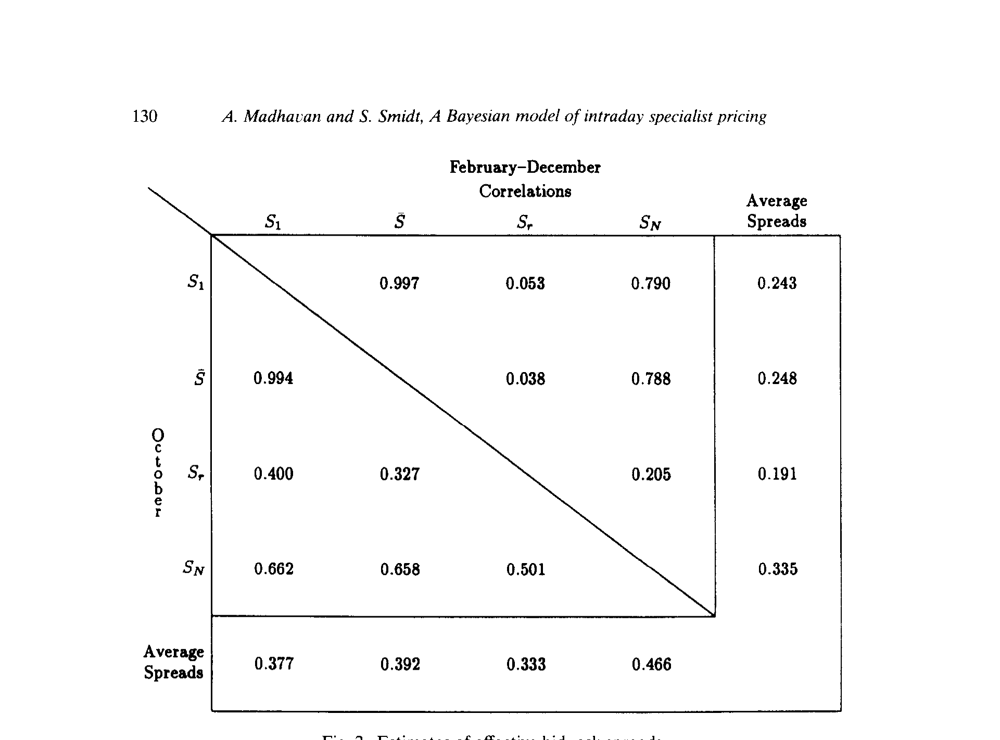
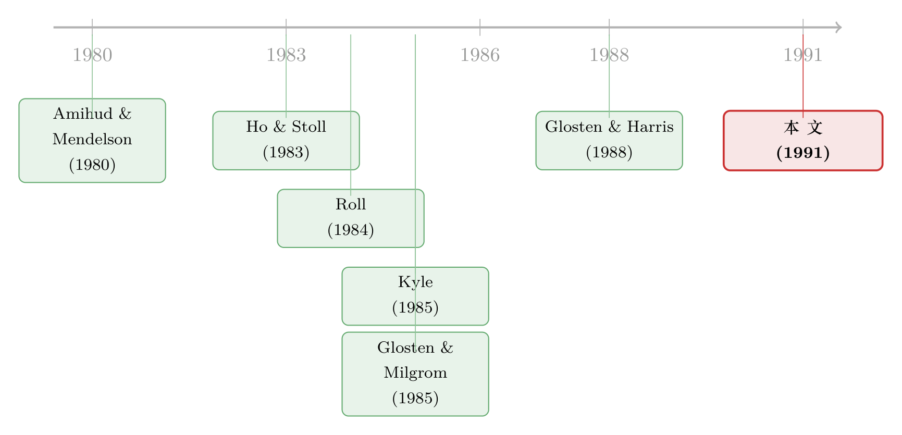

一笔订单推动了价格，可它说的究竟是哪种话？
本文读的是 Madhavan & Smidt (1991, Journal of Financial Economics)：他们把做市商想象成一个用贝叶斯规则更新信念的人，于是订单流里那点「私人信息」就被压缩成了一个权重 π——它衡量价格对公共信息的信任程度，π 越小，信息不对称越严重。靠着「同号成交变量在当期与滞后期系数不相等」这条识别裂缝，他们用一家 NYSE 专家做市商近 75,000 笔成交记录把 π 估了出来，结论是：信息效应很强，库存效应很弱，而 1987 年 10 月的隐含价差显著高于全年其余时间。
1 引言：价格动了，可它在说什么？
设想这样一个再普通不过的瞬间：一笔买单打进市场，成交价往上跳了一格。你会怎么解释这一跳？
市场微观结构 (market microstructure) 这门学问，过去二十年里其实一直在为这一格的涨跌争论不休。它给出了三种互不相让的故事。
第一种故事最朴素，叫买卖价差反弹 (bid-ask bounce)。买单成交在卖价、卖单成交在买价，买卖单随机到达，价格就在价差两端来回弹跳——这跳跟「价值」毫无关系，纯粹是交易成本的影子。
第二种故事关于库存 (inventory)。做市商手里压着货，库存一旦偏离了他心里那个「舒服的水平」，他就会用价格当工具：手里太多（多头），就压低报价吸引买盘；手里太空（空头），就抬高报价勾来卖盘。于是价格朝着订单流的方向走。
第三种故事最迷人，关于信息 (information)。市场上有些人握着别人不知道的私人信息，理性的做市商心知肚明：一笔买单背后，也许站着一个知道得比我多的人。于是他一边成交，一边修正自己对股票价值的判断——price 跟着 belief 一起往上挪。
麻烦就在这里：库存模型和信息模型，都预言价格朝订单流的方向移动。同样是「买单来了价格涨」，一个说是做市商在倒腾库存，一个说是市场在消化信息。它们给出同一个观测结果，却指向完全不同的世界。你怎么把它们分开？
这正是 Madhavan 和 Smidt 这篇 1991 年 JFE 论文要回答的问题。而他们给出的答案，漂亮得近乎狡猾：与其去猜价格为什么动，不如先问——那个做市商，到底有多相信他从订单里读到的东西？
2 核心一招：把做市商当成一个贝叶斯学习者
整篇论文的灵魂，其实就藏在一个再简单不过的直觉里。
如果一个有代表性的做市商用贝叶斯规则 (Bayesian updating) 来更新他对股票价值的判断，那么他心里那个「期望价值」，就一定是两样东西的加权平均：一个是先验均值 (prior mean)，它浓缩了所有公开信息；另一个是藏在当前订单流里的、带噪声的信号。
为什么订单流是「带噪声」的？因为下单的人里，有些是为私人信息而来的知情交易者，另一些只是为了流动性需求随便买卖的流动性交易者 (liquidity traders)。做市商分不清眼前这笔单子是哪一种，所以订单流对他而言，是一个真假参半的信号。
于是关键的一步出现了：做市商在「先验」上压的那个权重，本身就是一把衡量信息不对称的尺子。
如果订单流毫无信息含量（私人信息相对公共信息小到可以忽略），做市商根本不会因为一笔单子改主意，他把几乎全部权重压在先验上，这个权重接近 1。反过来，如果信息不对称严重，做市商的信念对订单流极其敏感，先验的权重就小到可以忽略。
这个权重，论文记作 \(\pi\)。它就是全文反复打磨、最后端上桌的那一个数。
我们先把模型的骨架立起来。全信息价格是一连串「红利」式的公共信息增量累加而成，\(P = \sum_t d_t\)，每个增量 \(d_t\) 独立同分布、均值为零——它代表公共信息流。做市商的定价规则写成：
$$ p_t = \mu_t + \psi D_t - \gamma (I_t - I_d) $$
这里 \(\mu_t\) 是做市商在 \(t\) 时刻对价值的条件期望，\(D_t = +1\) 表示买方发起、$-1$ 表示卖方发起，\(\psi \ge 0\) 是每股执行成本（也吸收了价格离散、租值等元素），\(I_t\) 是当前库存、\(I_d\) 是长期合意库存，\(\gamma \ge 0\) 度量库存效应——做市商越偏离合意库存，就越要用价格往回拉。
接着，每个时点上，所有人都先看到一个关于价值的带噪公共信号：
$$ y_t = V_t + \varepsilon_t, \qquad \varepsilon_t \sim N(0,\ \sigma_\varepsilon^2) $$
而下单的交易者还额外收到一个私人信号，于是他的后验均值是私人信号与公共信号的加权：
$$ m_t = \theta\, w_t + (1-\theta)\, y_t, \qquad \theta = \frac{\sigma_\varepsilon^2}{\sigma_\varepsilon^2 + \sigma_\delta^2} $$
然后是这套机器最精巧的齿轮——需求函数。在论文的附录里他们证明，若交易者是均值-方差效用，则（在发生交易的前提下）他的下单量恰好是：
$$ q_t = \alpha(m_t - p_t) - x_t $$
其中 \(\alpha > 0\)，\(x_t\) 是代表流动性交易的特质冲击。这一步是整座桥的桥墩：订单量 \(q_t\) 里既混着交易者的私人判断 \(m_t\)，又混着纯噪声 \(x_t\)。做市商看到 \(q_t\)，就等于收到一个关于价值的、被噪声污染了的信号。
把这个信号喂进贝叶斯更新，做市商的后验均值就能写成下面这个加权平均的形式——这是全文最该被记住的一行：
权重 \(\pi\) 由几个底层方差决定，并且可以证明 \(\pi \in (0,1)\)。论文进一步说明，\(\pi\) 随三件事递增：流动性交易的规模 \(\sigma_x^2\)（噪声越多、订单越不可信，越该靠先验）、私人信息的不精确度 \(\sigma_\delta^2\)、以及公共信息的精度 \(\sigma_\varepsilon^{-2}\)。一句话——市场越「干净」，\(\pi\) 越接近 1；信息不对称越凶，\(\pi\) 越往 0 掉。
到这里，那个抽象的「信息不对称」终于被钉成了一个能估计的参数。但问题还没完：\(\mu_t\) 是做市商脑子里的东西，看不见；先验 \(y_t\) 也看不见。一个能写进回归的方程，到底从哪里来？
3 识别策略：藏在两个系数里的不对称
真正关键的一步，是把那些看不见的信念，换成看得见的价格、库存与成交方向。
论文的做法是：用上一期价格做先验的代理，再扣掉它被交易成本和库存效应「污染」的部分。把后验 \(\mu_t\) 代回定价规则，再把先验的代理式代进去，一通代数之后，得到那个真正拿去估计的方程（论文的 eq. 11）：
$$ \Delta p_t = \kappa + \lambda\, q_t + \frac{\psi}{\pi}\, D_t - \psi\, D_{t-1} - \gamma\,(I_t - I_{t-1}) + \eta_t $$
其中 \(\Delta p_t = p_t - p_{t-1}\)，\(\kappa\) 是常数，而
$$ \lambda = \frac{1-\pi}{\alpha} $$
被称为信息效应 (information effect)——价格对订单量的响应。误差项 \(\eta_t\) 是做市商条件期望的创新，代表无法事前预测的公共信息事件；论文证明它服从一个移动平均 (moving average, MA(1)) 过程，这个误差结构不是硬塞进去的，而是从经济模型里自然长出来的。
现在请你盯住方程里那两个同号成交变量的系数：\(D_t\) 的系数是 \(\psi/\pi\)，\(D_{t-1}\) 的系数是 \(-\psi\)。它们的绝对值不相等，比值恰好是 \(1/\pi\)。
这一处不对称，就是整篇论文的识别裂缝。
为什么会不对称？直觉是这样的：做市商不仅根据成交量更新信念，还会因为「这笔单子是买还是卖」这个事实本身而跳一下——因为在零成交量处存在一个价格的跳跃间断（一笔哪怕极小的买单也透露了方向）。当期的方向 \(D_t\) 同时带着这个跳跃和信息，所以系数被 \(\pi\) 放大成 \(\psi/\pi\)；而滞后期 \(D_{t-1}\) 只剩下成本那一块 \(\psi\)。两者一比，\(\pi\) 就掉了出来。
这一点之所以重要，要放到它的对手们面前才看得清。
考虑 Roll (1984) 那个著名的有效价差估计量。它假设没有库存效应、没有私人信息，于是 \(D_t\) 与 \(D_{t-1}\) 的系数被强制相等，价差就等于 \(2\psi\)，可以只用成交价的一阶自协方差估出来。漂亮，但代价是：它根本看不见信息不对称。Glosten 和 Harris (1988)、Ho 和 Macris (1984) 的设定也都隐含地把这两个系数摁成了相等。Foster 和 Vishwanathan (1990) 同样如此——他们的模型其实是本文在 \(\pi = 1\) 这个特例下的样子。
换句话说，整条文献此前都在「\(D_t\) 与 \(D_{t-1}\) 系数相等」这条隐含约束下打转。Madhavan-Smidt 的贡献，就是松开这条约束——一旦松开，信息不对称的权重 \(\pi\) 就有了一个干净的识别来源。这也是为什么这个模型能把 Roll、Ho-Macris、Glosten-Harris、Foster-Vishwanathan 一并收作特例。
顺带一提，这种「用方向变量的系数结构去拆解价格形成」的思路，和后来用连续隐变量去逼近离散价格跳动的工作其实殊途同归（关于价格离散跳动背后那条连续的影子，可参见《价格只跳「八分之一」，但它背后藏着一条连续的影子》，那正是本文引用的 Hausman、Lo 与 MacKinlay 1990 的 ordered probit 路线）。
4 数据：一家专家做市商的账本，和它撞上的 1987
模型再优雅，也要有数据喂它。这篇论文真正令人眼红的，是它手里那份当年极为罕见的数据。
数据来自一家 NYSE 专家做市商 (specialist) 的交易记录，再配上 ISSM（Institute for the Study of Securities Markets）的成交数据。它覆盖了 1987 年的大部分时间——包括那年 10 月的崩盘——含有近 75,000 笔专家做市商的成交记录。作者说，这是当时学术界能拿到的、最大也最细的「库存 + 带符号成交量」时间序列。
但诚实地说，它也有它的天花板：全部分析建立在单一专家做市商交易的 16 只股票之上。论文自己反复提醒：把结论外推到别的资产或市场时，必须小心。这是一份深度惊人、但宽度有限的数据。
值得强调的是数据里那个不起眼却要命的细节：做市商并不需要承接每一笔成交——有些成交走的是限价单、场内交易员、或别的市场。论文用一个指示变量 \(F_t\) 标记「做市商是否接了这笔单的对手盘」，并据此定义库存 \(I_t = -\sum F_k q_k\)。那些不经过做市商的成交，反而成了识别的利器：因为它们让做市商的报价更新了、库存却没动，于是信息效应和库存效应之间的多重共线性被削弱，模型有了把两者分开的统计功力。
5 结果：信息很响，库存很哑
把 eq. (11) 估出来之后，几个结论相当鲜明。
第一，信息不对称的证据很强。 估出来的 \(\pi\) 显著小于 1，意味着做市商确实把可观的权重放在订单流上——市场感知到了信息不对称的存在。\(D_t\) 与 \(D_{t-1}\) 那道系数裂缝，是真的。
第二，库存效应却很弱。 度量库存效应的 \(\gamma\) 显得微不足道。这其实是个耐人寻味的反直觉结果：教科书里做市商「靠改价管库存」的故事，在分笔数据里几乎找不到痕迹。（做市商到底在多长的时间尺度、按单只还是按组合管库存，本身就是一桩公案，可参见《长一百万通用、空一百万福特，我还算「长」吗？》与《全世界最大的市场，做市商却从不靠「改价」管库存》。）
第三，交易成本可以被算出来，而且大宗交易和小额交易、买方发起和卖方发起，价格反应都不一样。 价格冲击 (price impact) 随成交规模递增——这正是图 1 想讲的故事。大宗交易相对小额交易、买单相对卖单，反应都更剧烈，作者把这归因于大宗交易在「楼上市场 (upstairs market)」被撮合的方式。

Figure 1: The average price impact as a function of trade size for February-December 1987
（买卖之间这种不对称，本身就是一个反复出现的实证规律，可参见《机构买卖股票，价格只动了「八分钱」——而买和卖，根本不是一回事》。）
第四，也是这篇论文最有时代感的一笔：1987 年 10 月的隐含买卖价差，显著高于那年其余时间。 而按照模型的语言，这不是因为库存成本飙升，而是因为感知到的信息不对称上升了——崩盘那几天，做市商更不敢相信订单流背后没有「知道得更多的人」，于是 \(\pi\) 往下掉、隐含价差被顶了上去。

Figure 2: Estimates of effective bid-ask spreads
最后，论文还顺手证明：\(\pi\) 这个信息不对称的度量，是解释专家做市商在不同股票上交易活跃度的一个重要决定因素——信息越对称的股票，做市商越愿意下场。
这里需要给读者一个坦白的提示：本文所依据的论文正文在结果章节处被截断，因此上面关于 \(\pi\)、\(\gamma\) 的具体点估计与价差的精确数值，无法逐一引用——我只复述了论文摘要与正文已明确陈述的定性结论与样本量，不去编造任何系数。读者若要精确数字，请回到原文的 Table 与 Figure。
6 文献脉络：从「库存」到「信息」，再到把两者称重
要理解这篇论文站在哪儿，得把这条研究线捋一遍。
最早，价格随订单流移动被归因于库存。Amihud 和 Mendelson (1980)、Ho 和 Stoll (1983)、以及 O'Hara 和 Oldfield (1986) 先后正式建模了做市商库存控制对价格的影响——价格成了做市商管理头寸的工具。

接着，一个全新的范式登场：信息。Kyle (1985) 与 Glosten、Milgrom (1985) 把「有人握着私人信息」这件事写进了均衡，理性的做市商不得不在报价里为逆向选择留出保护，Easley 和 O'Hara (1987) 等人继续推进。这条线告诉我们：价差里有一块，纯粹是信息不对称的代价。
然后，实证派开始动手拆解价差。Roll (1984) 给出只用成交价就能估的有效价差；Glosten 和 Harris (1988)、Stoll (1989) 试图把价差拆成成本与信息两块。但这些做法，要么假设没有信息、要么把同号成交变量的系数摁成相等——于是它们要么看不见信息，要么没法把信息和库存干净地分开。
Madhavan 和 Smidt (1991) 所处的位置，正是这条线的交汇点：它用一个贝叶斯框架，把库存、交易成本、公共信息与私人信息装进同一个方程，让信息效应（\(\pi\)、\(\lambda\)）和库存效应（\(\gamma\)）在数据里各自现形。 它不是又一个特例，而是把先前那些特例收编进来的那个更一般的母模型。也正因此，它后来成了 Hasbrouck (1988, 1991) 等人衡量「交易的信息含量」的重要先声。
评论与延伸（Q&A + 研究方向）
（a）几个可能的疑问
Q：\(\pi\) 和买卖价差，是不是一回事？
不是。价差是交易的成本，由 \(\psi\)（执行成本）和 \(\lambda\)（信息效应）共同构成；\(\pi\) 是做市商压在公共信息上的权重，是信息不对称的纯度量。两者相关——\(\pi\) 越小、信息效应越强、隐含价差越大——但它们回答的是不同的问题：一个问「贵不贵」，一个问「市场多怕被人套」。
Q：凭什么「\(D_t\) 与 \(D_{t-1}\) 系数不相等」就能识别出 \(\pi\)？
因为此前的模型（Roll、Glosten-Harris、Ho-Macris、Foster-Vishwanathan）都隐含假设这两个系数相等。在本文里，做市商会因为「成交方向」这个事实本身而更新信念，加上零成交量处的跳跃间断，使当期方向系数被放大成 \(\psi/\pi\)、而滞后期只剩 \(\psi\)。两者之比正是 \(1/\pi\)——识别完全来自这道被对手们摁住、却被本文松开的裂缝。
Q：库存效应为什么这么弱，可信吗？
模型假设合意库存 \(I_d\) 是常数。如果现实中 \(I_d\) 会随时间漂移，或做市商在更长的时间尺度、跨股票地管库存，那么用分笔数据估出的 \(\gamma\) 自然会很小。所以「库存效应弱」更稳妥的读法是：在分笔、单只股票、\(I_d\) 恒定的设定下，价格里看不到明显的库存印记，而不是「库存管理不存在」。
Q：那个 \(R^2\) 能解释成什么？
论文指出，若模型设定完美，回归的 \(R^2\) 度量了公共信息冲击对价格方差的贡献份额，而 \(1-R^2\) 度量了交易本身（私人信息 + 噪声）所产生的价格波动份额。这是一个很有想象力的解读，Hasbrouck (1991) 后来正式发展并检验了这类「交易信息含量」的度量。
Q：只有 16 只股票、一家专家做市商，结论能推广吗？
论文自己把这一条写得很诚实：不能轻易外推。数据深度惊人（近 7.5 万笔、含崩盘），但宽度有限。把 \(\pi\) 当成一个可跨市场比较的「信息不对称指数」之前，至少需要在更广的股票、更多的做市商、乃至别的市场结构里复现。
Q：1987 年 10 月价差走阔，凭什么说是「信息」而不是「库存」或「恐慌」？
在模型的语言里，价差走阔可以分解到 \(\psi\)、\(\lambda\)、\(\gamma\) 三个通道上。论文把 10 月的异常主要归到信息效应（感知到的信息不对称上升、\(\pi\) 下降）而非库存。这是模型框架内的归因，逻辑自洽；但它也提醒我们，这种归因强烈依赖模型设定本身的正确性——这恰是它最该被追问的地方。
（b）几个可能的研究问题与提案
1）把 \(\pi\) 搬到公司债的交易商市场。 【经济故事】公司债是典型的场外、做市商主导、信息高度不对称的市场。如果能把 Madhavan-Smidt 的 \(\pi\) 估到单只债券、单个交易商层面，就得到了一把直接度量「债券信息不对称」的尺子，远比单纯的价差更结构化。 【可行性】中。TRACE 提供了成交价与方向（可用 Lee-Ready 1991 推断），但库存数据在债券市场极难获得，\(\gamma\) 那一支可能要放弃或另寻代理；好在本文恰恰说明库存效应很弱，去掉它未必致命。
2）外资 vs. 本土订单流，\(\pi\) 一样吗？ 【经济故事】如果能把订单流按投资者类型（外资 / 本土）打标签，就能分别估各自面对的 \(\pi\)，直接检验「外资是否更/更不知情」这个长期争论——而不是靠事后收益去反推。 【可行性】中。需要带投资者身份标签的成交簿（如韩国、台湾、部分新兴市场交易所提供过此类数据）。识别上要小心：外资订单的规模分布、择时与本土不同，需要在 \(\pi\) 的估计里控制这些差异。
3）把 \(\pi\) 当成流动性危机的「早期警报」。 【经济故事】本文已经展示 1987 年 10 月 \(\pi\) 下降、隐含价差走阔。一个自然的延伸是：在 2008、2020 这类公司债流动性危机中，\(\pi\) 是否会领先于价差崩塌而下降？若是，它就是一个比价差更前瞻的恐慌指标。 【可行性】中到高。高频债券成交数据 + 滚动窗口估计 \(\pi\) 即可，识别难点在于把「信息不对称上升」与「交易商资产负债表收缩」这两条通道分开。
4）在库存可观测的市场里，给「库存效应弱」翻案或定案。 【经济故事】本文的库存数据来之不易，且结论是「弱」。后 Volcker 规则时代，部分交易商库存数据可以从监管申报中获得。用一个库存真正可观测、且 \(I_d\) 允许漂移的设定重估 \(\gamma\)，能告诉我们「库存效应弱」到底是真相还是设定的产物。 【可行性】中。数据壁垒高（监管级别的库存数据），但一旦拿到，识别相对干净。
我的判断
这篇论文真正的贡献，不在于它估出了某个具体的 \(\pi\)，而在于它重新框定了问题：把「价格为什么随订单流移动」这道含混的问题，翻译成「做市商在公共信息上压了多大权重」这道可估计的问题，并用一道此前被所有人摁住的系数裂缝把这个权重撬了出来。能把 Roll、Ho-Macris、Glosten-Harris、Foster-Vishwanathan 统统收作特例，这种「母模型」式的整合本身就极有分量。
对识别，我最担心两点。其一是合意库存 \(I_d\) 恒定这个假设——它几乎决定了「库存效应弱」这个最反直觉的结论，一旦 \(I_d\) 会漂移，\(\gamma\) 的微弱就可能是设定造成的假象，而非市场的真相。其二是外部效度：16 只股票、单一专家做市商，让人很难判断 \(\pi\) 在别的资产、别的市场结构里是否还稳定可比。
我最想看到的后续，是把 \(\pi\) 从「一篇论文里的一个估计」变成「一个可跨市场、跨时间比较的信息不对称指数」——尤其是搬进公司债与外资订单流这两个信息不对称本就更尖锐、却长期缺乏干净度量的场景里。如果 \(\pi\) 在那里依然能被识别、且行为符合直觉，那这篇 1991 年的论文，就远不止是一段微观结构的历史。
参考文献
Amihud, Y. and H. Mendelson (1980). Dealership market: Market making with inventory. Journal of Financial Economics 8(1), 31–53.
Easley, D. and M. O'Hara (1987). Price, quantity, and information in securities markets. Journal of Financial Economics 19(1), 69–90.
Foster, F. D. and S. Vishwanathan (1990). A theory of intraday variations in volume, variance, and trading costs in securities markets. Review of Financial Studies 3(4), 593–624.
Glosten, L. and L. Harris (1988). Estimating the components of the bid-ask spread. Journal of Financial Economics 21(1), 123–142.
Glosten, L. and P. Milgrom (1985). Bid, ask, and transaction prices in a specialist market with heterogeneously informed agents. Journal of Financial Economics 14(1), 71–100.
Hasbrouck, J. (1988). Trades, quotes, inventories and information. Journal of Financial Economics 22(2), 229–252.
Hausman, J., A. Lo and A. C. MacKinlay (1990). An ordered probit analysis of transaction stock prices. Working paper, MIT.
Ho, T. and R. Macris (1984). Dealer bid-ask quotes and transaction prices: An empirical study of some AMEX options. Journal of Finance 39(1), 23–45.
Ho, T. and H. Stoll (1983). The dynamics of dealer markets under competition. Journal of Finance 38(4), 1053–1074.
Kyle, A. (1985). Continuous auctions and insider trading. Econometrica 53(6), 1315–1335.
Lee, C. M. C. and M. Ready (1991). Inferring trade direction from intradaily data. Journal of Finance 46(2), 733–746.
Madhavan, A. and S. Smidt (1991). A Bayesian model of intraday specialist pricing. Journal of Financial Economics 30(1), 99–134.
O'Hara, M. and G. Oldfield (1986). The microeconomics of market making. Journal of Financial and Quantitative Analysis 21(4), 361–376.
Roll, R. (1984). A simple implicit measure of the effective bid-ask spread in an efficient market. Journal of Finance 39(4), 1127–1139.
Stoll, H. (1989). Inferring the components of the bid-ask spread: Theory and empirical tests. Journal of Finance 44(1), 115–134.